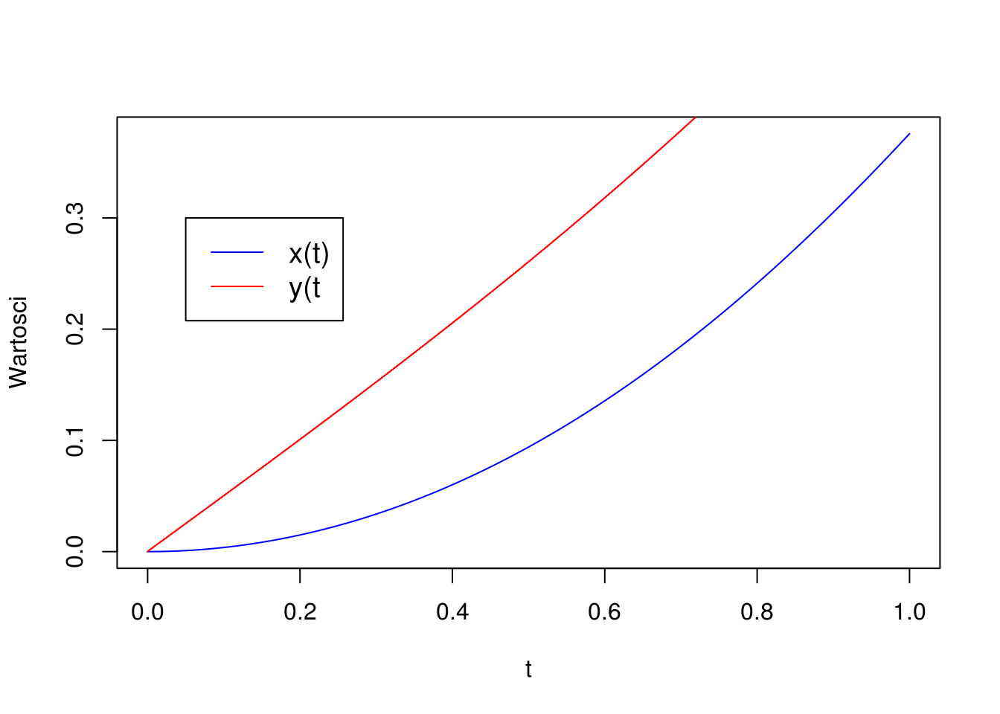
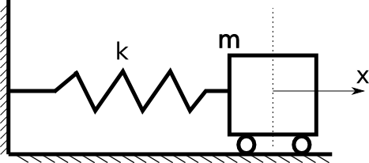

Pliki do wykorzystania w poniższym ćwiczenie można pobrać za pomocą poniższych linków:
Z poprzednich ćwiczeń dowiedzieliśmy się jak można dokonać całkowania równań różniczkowych zwyczajnych (z ang. Ordinary Differential Equations, ODE). Opisane metody pozwalają na znalezienie konkretnej funkcji spełniającej dowolne równanie pierwszego rzędu, tj. postaci: \[ \frac{dy}{dt} = f(t, y(t)) \] Jednak świat który opisujemy za pomocą równań różniczkowych nie jest niestety tak prosty. W wielu zagadnieniach napotykamy na sytuacje gdy należy “jednocześnie” rozwiązać dwa równania różniczkowe. Mówiąc “jednocześnie” mamy tutaj na myśli sytuację, w której w obu równaniach pojawiają się nieznane(których poszukujemy rozwiązując równania różniczkowe) funkcje, np.: \[ \begin{aligned} \frac{dx}{dt} &= sin(y) + cos(x) \cdot t \\ \frac{dy}{dt} &= sin(y) \cdot t + cos(x) \end{aligned} \]
Jak widać w powyższym układzie równań poszukiwane funkcje to \(x = x(t)\) i \(y=y(t)\). Obie są funkcjami zmiennej niezależnej \(t\). W obu równaniach pojawia się jednak zarówno funkcja \(x\) jak i \(y\). Równania te są sprzężone, a zatem nie da się w ogólności rozwiązać (scałkować) tego układu w sposób skwencyjny, tj. znaleźć najpierw pierwszą funkcję, a potem oddzielnie drugą. W szczególnych przypadkach można się pokusić o transofrmację wyjściowych równań, tak aby wyrugować jedną ze zmiennych. Jednak w ogólnym przypadku, gdy mamy doczynienia z silnie uwikłanymi funkcjami prawych stron, taki zabieg jest nie możliwy. Dlatego aby znaleźć poszukiwane rozwiązania należy całkować równocześnie wszystkie równania. Takim zagadnieniem zajemiemy się w poniższym ćwiczeniu. Postaramy się zastosować poznane metody z poprzednich zajęć do rozwiązania układów równań pierwszego rzędu.
Problem rozwiązywania układów rówań pierwszego rzędu bardzo często pojawia się w związku z problemami opisanymi równaniami różniczkowymi zwyczajnymi wyżych rzędów. Równanie różniczkowe zwyczajne drugiego rzędu są jednymi z bardziej rozpowszechnionych równań w mechanice, ponieważ służą do opisu dynamiki, np. ruchu bryły sztywnej pod działaniem sił zewnętrznych. Równanie te przyjmują następującą postać: \[ \frac{d^2x}{dt^2} = f(t, x, \frac{dx}{dt}) \] Każde tego typu równanie można przedstawić w równoważnej formie układu rówań pierwszego rzędu: \[ \begin{aligned} \frac{dv_x}{dt} &= f_1(t, x, v_x) \\ \frac{dx}{dt} &= v_x \end{aligned} \] Powyższy układ jest tożsamy z równanie drugiego rzędu i znalezienie przebiegu funkcji \(x=x(t)\) będzie odpowiadało scałkowaniu rówania drugiego rzędu. Tego typu problemem zajmiemy się w drugiej części tego ćwiczenia.
Na poprzednich zajęciach poznaliśmy dwie metody jawnego całkowania równań różniczkowych zwyczajnych pierwszego rzędu:
Metody te należą do klasy metod iteracyjnych i pozwalają znaleź przebieg poszukiwanej funkcji obliczając jej wartość w kolejnych krokach czasowych. W przypadku układów równań czynimy podbnie, tj. obliczamy nowe wartości funkcji bazując na poprzednim rozwiązaniu. Różnica w tym przypadku polega na tym, że musimy kolejny krok całkowania wykonać dla wszystkich równań układu. Weźmy pod uwagę przykładowy układ równań ze wstępu do tych ćwiczeń: \[ \begin{aligned} \frac{dx}{dt} &= sin(y) + cos(x) \cdot t \\ \frac{dy}{dt} &= sin(y) \cdot t + cos(x) \end{aligned} \] z warunkami początkowymi: \[ x(t=0) = 0 \\ y(t=0) = 0 \] Dla tagiego układu równań całkowanie metodą Eulera można opisać za pomocą następującego algorytmu:
Korzystając z powyższego algorytmu można uzyskać następujący wynik dla czasu w zakresie [0,1] 
Powyższy algorytm bedzie bardzo podobny dla metody Rungego-Kutty. Różnica będzie jedynie polegała na zastąpieniu sposobu obliczania wartości funkcji parawych stron, tj. w tym przypadku zmiennych \(dxdt\) oraz \(dydt\).
Teraz przejdźmy do kolejnego zagadnienia. Aby zastosować poznane metody do problemów opisanych równaniami wyższych rzędów należy przekształcić wyjściowy problem do układu równań pierwszego rzędu. Aby przeanalizować ten proces weźmy pod uwagę następujące zagadnienie: 
Ruch wózka, zakładając, że w pozycji wyjściowej sprężyna jest nierozciągnięta oraz masa kół jest pomijalna, można opisać za pomocą prostego równania dynamiki bazując na III zasadzie dynamiki Newtona: \[ F_{wózek} = - k\cdot x = m \cdot a\] wiedząc, że przyśpieszenie to druga pochodna przemieszczenia po czasie możemy ostatecznie zapisać: \[ \frac{d^2x}{dt^2} = - \frac{k}{m} \cdot x \]
Oprócz równania potrzebujemy jeszcze warunków początkowych. Z racji tego, że jest to równanie drugiego rzędu będziemy potrzebowali dwóch takich warunków. W tym przypadku możemy wprost założyć, że startowe położenie wózka jest w początku układu współrzędnych, czyli: \[ x(t=0) = 0 \] oraz, że na początku wózek jest w spoczynku: \[ \frac{dx}{dt}(t=0)=0 \] Teraz musimy przekształcić ten problem do problemu opisanego układem dwóch równań różniczkowych pierwszego rzędu. Można to uczynić na kilka sposobów. Jednym z nich jest skorzystanie z równań kanonicznych, które opsiują ruch ciała za pomocą pary [pęd, położenie]. Innym podjeściem, które najłatwiej w tej chwili zrealizować, bedzie przekształcenie równania wyjściowego przez wprowadzenie nowej zmiennej - \(v\) i zastosowanie prostego podstawienia: \[ v = \frac{dx}{dt} \] Powyższe podstawienie automatycznie definiuje nam nowe równanie, które wiąże prędkość i położenie. Teraz, pozostaje tylko zastosować powyższe podstawienie w kontekście równania wyjściowego: \[ \frac{d^2x}{dt^2} = \frac{d}{dt} (\frac{dx}{dt}) = \frac{dv}{dt} = -\frac{k}{m}x \] Oprócz równań podobnie należy uczynić z warunkami początkowymi. Ostatcznie otrzymujemy następujący układ równań: \[ \frac{dv}{dt} = -\frac{k}{m} x \\ \frac{dx}{dt} = v \\ x(t=0) = 0 \\ v(t=0) = 0 \]
Ruch wahadła matematycznego opisuje równanie różniczkowe z warunkami początkowymi (pomijamy opór powietrza, nić jest nieważka i nierozciągliwa): \[ \begin{aligned} \frac{d^2\alpha}{dt^2} &= -\frac{g}{l}sin(\alpha) \\ \alpha(t_0) &= \alpha_0 \\ \frac{d\alpha}{dt}(t_0) &= \omega_0 \end{aligned} \] gdzie:
\(\alpha\) - kąt wychylenia wahadła z położenia równowagi,
\(g\) - przyśpieszenie ziemskie,
\(l\) - długość wahadła,
\(m\) - masa kuli zaczepionej na końcu wahadła.